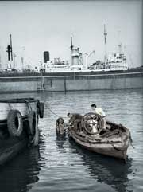

Il Principio di Archimede - Recensione

Giovanni De Luna
Mi ero ripromesso di leggere questo libro come se non conoscessi Dario Lanzardo e di non andare a ritrovare elementi che potessero configurarsi come una storia della sua e della mia generazione. Ero favorito in questo tipo di approccio ché si trattava di un romanzo che era insolito rispetto alla produzione di Dario ed ero sicuro del fatto mio. In realtà dopo le prime scene iniziali nelle quali lui va in apnea sul relitto a prendere il piccolo trofeo, immediatamente è scattata l’identificazione perché, come bambini di città di mare, nel dopoguerra ci siamo esercitati davanti al porto di Salerno o davanti al porto di La Spezia a penetrare nei relitti delle navi affondate. E da questo momento in poi il meccanismo di identificazione mi ha accompagnato in tutta la lettura, perché io a questo punto evidentemente non potevo non leggerlo come uno straordinario romanzo di formazione. Devo dire che da questo punto di vista rispetto al giallo che in qualche modo rappresenta il nucleo romanzesco de libro, lì non mi è scattato nessun meccanismo di identificazione perché si tratta di un orribile delitto, di una donna morta; quello è rimasto più sullo sfondo. Quello che mi ha prodotto un coinvolgimento totale è stata la storia della nave, il cargo, e la vicenda del protagonista su questa nave: questa nave è più di una metafora, questa nave è la quasi concretizzazione plastica, evidente, palpitante di quella che era l’Italia degli anni Cinquanta. Quella nave è la rappresentazione più simbolicamente efficace di cosa era la stratificazione di classe dell’Italia degli anni Cinquanta: dagli inferi in cui si aggirano i mozzi delle macchine, unti di grasso, di olio, di problemi, parlano un calabrese stretto, ecc. sino a salire su su su fino a questa specie di empireo dove si staglia la persona del sovrano assoluto di questa nave, il comandante, che addirittura mangia nella mensa separato da un paravento. Proprio è in verticale quella che noi potremo immaginare come la stratificazione di classe più evidente, più simbolicamente efficace che si potesse raccontare, immaginare. E quello che mi ha colpito è che dentro questo luogo così segnato da questa verticalità della stratificazione sociale c’è però un luogo che è della libertà, della democrazia, che è la sala mensa, dove invece le gerarchie si frangono, sino a un certo punto perché il capitano non mangia con gli ufficiali, però si apre la discussione, c’è una palestra di democrazia, di confronto, dove il giovane Davide fa le sue prime prove di cosa vuol dire essere all’opposizione, pensarla in maniera diversa. Questi due spazi, lo spazio della libertà e lo spazio della gerarchia e della disciplina, sono una palestra simbolica straordinaria; perché questa nave a un certo punto trascende il percorso di Davide per diventare veramente una metafora dell’Italia degli anni Cinquanta. E’ evidente che l’ambiente degli anni Cinquanta c’è nell’ambientazione, nella nave liberty, nave di guerra, navi poi riciclate come mercantili, come cargo, c’è nelle rovine dell’Italia: insomma spunti materiali, le macerie, le rovine, le tracce della guerra ci sono dappertutto; ma soprattutto c’è un’Italia che dal fascismo aveva ereditato non tanto le riforme della politica – evidentemente il regime non c’era più – e neanche tanto le cose su cui spesso si mette l’accento: ad esempio che lo stato era rimasto praticamente intatto, magistratura, carabinieri, tutto l’apparato del fascismo era rimasto nello stato repubblicano – ma aveva ereditato il principio gerarchico autoritario su cui il fascismo si era retto.
No nessun contatto orizzontale, tutto verticale, contatti verticali, compartimenti verticali. Perché poi l’unica sintesi era quella al vertice dove stava la politica. C’era stata la Costituzione, era cambiata la forma politica dello stato, la democrazia rappresentativa, ma nella struttura verticale non era cambiato niente: ciascuno al suo posto: si manteneva il principio autoritario verticale su cui era organizzata la società italiana degli anni Cinquanta.
Questo è il percorso di formazione di Davide: è questo a cui ci si ribella. A questa dimensione, del ciascuno al suo posto, a questo autoritarismo, a questa autorità destituita di legittimità, perché questo capitano non è legittimato ad esercitare questo potere nella sua autorità: questa autorità che era un involucro formale, senza nessun tipo di contenuto, era l’essenza di questo potere. E Davide… è questo che ha fatto scattare l’identificazione, la possibilità di leggere questo libro quasi di formazione che non riguarda soltanto lui ma riguarda una intera generazione, che invece di accettare la stratificazione gerarchica della nave si è riconosciuta nello spazio del confronto, del dibattito, della opposizione.
Questo in generale. Poi rispetto a Davide, altro percorso di formazione è quello del suo occhio. Qui c’è un occhio che comincia ad allenarsi al rapporto con la realtà. Un occhio che comincia ad allenarsi a strappare alla realtà brandelli di conoscenza, e c’è non soltanto la formazione di un intellettuale ma di un fotografo, di un fotografo che però usa la macchina fotografica non nel senso descrittivo ma cercando di capire e conoscere la realtà con cui si confronta. E tutto questo dentro questa nave che non ha niente di conradiano, ma diventa invece un luogo di formazione, un luogo di formazione non solo per lui ma per tutti noi.